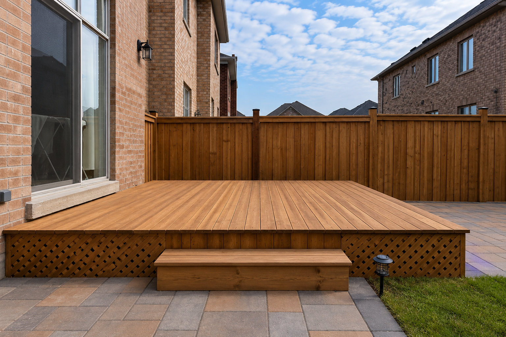
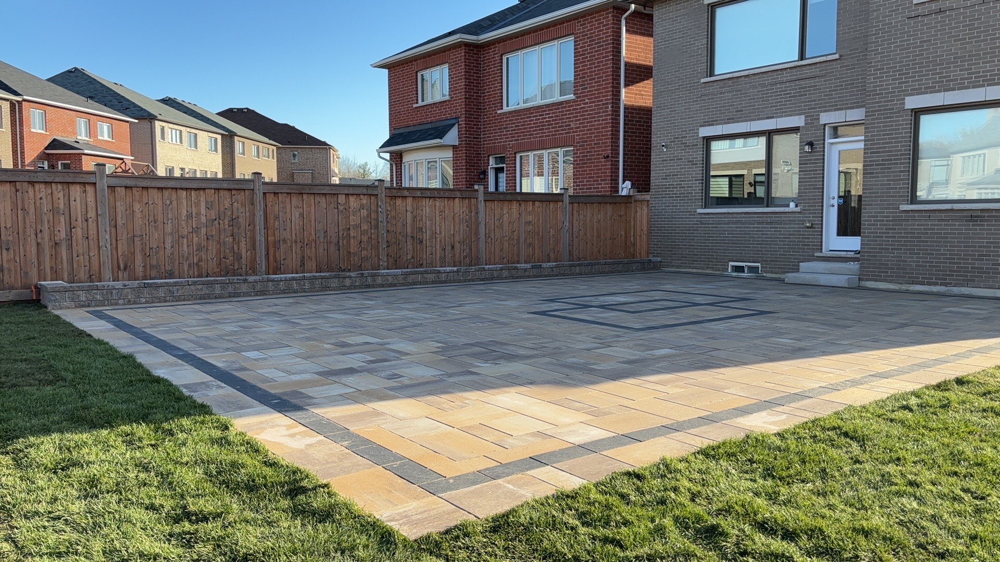

A well-designed outdoor living area can completely change how you use your home. It can create space for dining, entertaining, relaxing, barbecuing, or spending time with family during the warmer months.
For many GTA homeowners, the main decision is whether to build a deck, install a patio, or create an interlocking outdoor space.
Each option can provide a strong finished result, but they are not interchangeable. Yard elevation, drainage, access, maintenance, architectural style, budget, and intended use all affect which option is most suitable.
Before choosing, it helps to understand how decks, patios, and interlocking differ in appearance, structure, cost, durability, and everyday use.
Start With How You Want to Use the Space
The first step is deciding what you want the new outdoor area to support.
Common uses include:
- outdoor dining
- family gatherings
- barbecuing
- relaxing
- entertaining guests
- adding a fire feature
- creating a seating area
- connecting the house to the yard
- creating a low-maintenance backyard
- improving curb appeal or resale value
A small seating platform may only need a simple deck or patio. A larger entertainment area may include interlocking, a pergola, an outdoor kitchen, lighting, planting beds, and multiple seating zones.
Think about how many people will normally use the space and what furniture or equipment will be placed there.
Also consider whether the outdoor area should feel connected to the house or more integrated with the landscaping.
What Is a Deck?
A deck is an elevated outdoor platform, usually built from wood or composite materials.
Decks are commonly attached to the house and may be built level with a back door. They can also be freestanding.
Decks are often a practical choice when:
- the back entrance is elevated
- the yard has a slope
- homeowners want a direct transition from indoors to outdoors
- the project needs to avoid major excavation
- the design includes stairs, railings, or multiple levels
Common deck materials include:
- pressure-treated wood
- cedar
- composite decking
- PVC decking
- specialty wood products
Wood decks provide a natural appearance and can be stained in different colours. Composite products generally require less ongoing maintenance but often have a higher initial cost.

Advantages of a Deck
Decks can provide several benefits.
They can:
- create a level surface above sloped ground
- connect directly to an elevated door
- add visual warmth
- support outdoor furniture and barbecues
- be customized with railings and stairs
- include built-in seating
- create storage below the platform
- work well with pergolas and privacy screens
A deck can also create a strong architectural connection to the house.
For homes with a raised back entrance, a deck may be the most natural way to transition into the yard.
Deck Maintenance
Maintenance depends on the material.
Pressure-treated wood and cedar may require:
- cleaning
- staining
- sealing
- board replacement
- checking fasteners
- inspecting railings
- preventing moisture buildup
Composite decking generally requires less maintenance but still needs cleaning and periodic inspection.
Homeowners should also consider:
- snow removal
- fading
- scratches
- heat in direct sunlight
- drainage below the deck
- access underneath
- future repairs
Wood provides a natural look, but it requires more long-term care than many patio surfaces.
What Is a Patio?
A patio is a ground-level outdoor area built from concrete, stone, slabs, pavers, or other hardscape materials.
Patios are usually integrated directly into the landscape rather than elevated above it.
They work well for:
- dining areas
- lounge seating
- fire pits
- outdoor kitchens
- pergolas
- garden connections
- large open entertainment spaces
A patio may be constructed using poured concrete, natural stone, porcelain slabs, interlocking pavers, or concrete slabs.
The site must be excavated, graded, and prepared properly before the finished surface is installed.
Advantages of a Patio
Patios can provide:
- a strong connection to the landscape
- large usable seating areas
- flexibility in shape and size
- compatibility with planting beds
- options for outdoor kitchens and fire features
- fewer structural components than a deck
- a clean and grounded appearance
Patios are especially effective in relatively level yards.
They can also be designed around trees, garden beds, retaining walls, and other outdoor features.
Patio Maintenance
Maintenance depends on the material.
Concrete patios may develop cracks over time. Natural stone may require cleaning and occasional repair. Pavers may need joint sand replacement or resetting if sections move.
General patio maintenance may include:
- sweeping
- washing
- weed control
- stain removal
- checking drainage
- resetting uneven sections
- replacing joint sand
- optional sealing
Proper grading and base preparation are essential for patio durability.
What Is an Interlocking Patio?
An interlocking patio uses individual concrete pavers installed over a prepared and compacted base.
Interlocking is popular because it provides many design options.
Homeowners can choose:
- colours
- sizes
- textures
- patterns
- borders
- accent stones
- modern or traditional styles
Interlocking can be used for:
- patios
- walkways
- driveways
- front entrances
- pool surrounds
- outdoor kitchens
- fire pit areas
- side yards
Unlike poured concrete, individual pavers can often be removed and replaced if repairs are needed.

Advantages of Interlocking
Interlocking can provide:
- strong curb appeal
- many design combinations
- easier localized repairs
- coordination with walkways and driveways
- flexibility in size and layout
- compatibility with outdoor structures
- a finished and customized appearance
Interlocking can also help divide the yard into separate zones.
For example, one area can be used for dining, another for a fire feature, and another for circulation or garden access.
Interlocking Maintenance
Interlocking maintenance may include:
- sweeping
- washing
- removing weeds
- replacing polymeric sand
- cleaning stains
- repairing settlement
- optional sealing
- checking edges
A properly prepared base is essential.
Poor base preparation can lead to:
- sinking
- uneven pavers
- water pooling
- spreading edges
- separated joints
- frost movement
The visible pavers are only one part of the installation. Excavation, drainage, compaction, bedding material, and edge restraints are equally important.
Deck vs. Patio for a Sloped Yard
Decks often work better when the yard slopes away from the house or when the back entrance is elevated.
A raised deck can create a level platform without completely reshaping the ground below.
A patio on a sloped property may require:
- excavation
- retaining walls
- steps
- grading
- drainage work
- additional base preparation
This does not mean a patio cannot work in a sloped yard. It simply means the project may require more site preparation.
In some yards, combining a raised deck with a lower interlocking patio creates the best result.
Which Option Is Better for Outdoor Dining?
All three options can support outdoor dining.
A deck works well when homeowners want dining space directly outside the kitchen or back door.
A patio works well when homeowners want a larger area integrated with the yard.
Interlocking is especially useful when the dining space is part of a larger outdoor design that may include:
- a pergola
- outdoor kitchen
- barbecue station
- fire feature
- garden beds
- lighting
- multiple seating zones
The best choice depends on elevation, access, furniture size, and the overall backyard plan.
Which Option Requires the Least Maintenance?
Composite decks generally require less maintenance than natural wood decks.
Interlocking and patios also require maintenance, but usually not staining or sealing in the same way as wood.
A low-maintenance design may include:
- composite decking
- interlocking
- artificial grass
- durable fencing
- low-maintenance planting
- simple outdoor furniture
- proper drainage
No outdoor surface is completely maintenance-free.
Homeowners should consider what type of care they are comfortable performing each year.
Cost Considerations
Costs depend on:
- project size
- material selection
- site access
- excavation
- grading
- drainage
- structural requirements
- stairs and railings
- retaining walls
- borders and patterns
- demolition
- disposal
- lighting
- custom features
Wood decks may have a lower initial cost than composite decks, but may require more maintenance over time.
Interlocking can have a higher upfront cost than simple concrete, but offers more design flexibility and repair options.
Patio costs vary significantly depending on whether the material is concrete, natural stone, slabs, or interlocking.
The final decision should consider long-term maintenance and durability, not only the first estimate.
GTA Weather and Seasonal Performance
Outdoor surfaces in the GTA must handle:
- heavy rain
- snow
- ice
- summer heat
- spring thaw
- freeze-thaw cycles
Decks require proper structural support, drainage, and ventilation.
Patios and interlocking need stable bases, correct slope, and controlled drainage.
Standing water can contribute to:
- slippery surfaces
- frost movement
- wood deterioration
- sinking pavers
- damaged joints
- spring mud
Material selection and installation quality are especially important in local weather conditions.
Safety and Accessibility
Consider how users will move through the space.
Important details include:
- step height
- railing requirements
- surface grip
- pathway width
- lighting
- transitions between materials
- access for children
- access for older family members
- furniture placement
A ground-level patio may offer easier access than a raised deck with stairs.
However, a deck may provide a more direct transition from an elevated entrance.
The design should reflect how the household will use the area now and in the future.
Can You Combine a Deck and Interlocking?
Yes.
Many of the most functional backyard designs combine materials.
A common layout may include:
- a deck directly outside the back door
- stairs leading down to an interlocking patio
- a pergola or gazebo over part of the patio
- garden beds around the perimeter
- a pathway connecting the patio to the side yard
- a fire feature in a separate seating zone
This creates visual interest and allows each area to serve a specific purpose.
Combining materials can also help manage elevation changes and connect the house to the landscape.
Questions to Ask Before Choosing
Before deciding between a deck, patio, or interlocking, ask:
- Is the back entrance elevated?
- Is the yard flat or sloped?
- How will the space be used?
- How many people should it accommodate?
- Do you want outdoor dining or lounging?
- How much maintenance are you comfortable with?
- What is the project budget?
- Are drainage improvements needed?
- Will the design include a pergola or outdoor kitchen?
- Are stairs or railings required?
- Should the space connect to a driveway or walkway?
- Do you prefer a natural wood look or a hardscape finish?
A site visit can help determine which option fits the property best.
Final Thoughts
Decks, patios, and interlocking can all create attractive and functional outdoor living spaces.
A deck may be the best option for an elevated entrance or sloped yard. A patio may work well for a ground-level seating area connected to the landscape. Interlocking provides strong design flexibility, repairability, and coordination with other hardscape features.
In many cases, a combination of materials creates the best result.
The most important factors are proper planning, drainage, base preparation, structural support, and choosing materials that match the homeowner's lifestyle.
Greatland Construction provides decks, interlocking patios, walkways, pergolas, fencing, landscaping, drainage improvements, and complete outdoor living renovations across the GTA.